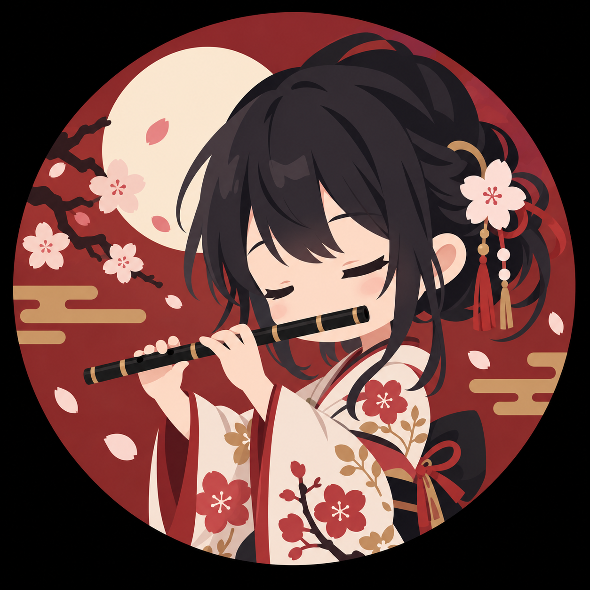
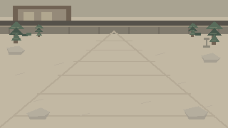
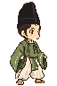

01 / RECORD●
録音して、聴き返す。
テイクごとに演奏を記録。ひとつ前の音と聴き比べて、自分の変化に気づけます。
TAKE 01 · TAKE 02 · YOUR NEXT TAKE
UZMERA INSPIRED BY AME-NO-UZUMEYOUR EVERYDAY MUSIC PRACTICE COMPANION
練習の時間を、もっと自分らしく。
演奏を記録し、聴き比べ、昨日の自分から一歩ずつ。
App Store公開準備中
Uzmeraを知るiPhone & iPad音楽を練習するすべての人へ

01 — THE IDEA
Uzmera の名は、日本神話に登場する芸能の神、アメノウズメに由来します。踊りや音楽で場を明るくした神さまのように、音楽に向き合う時間が少し楽しくなるように。録音や練習の道具を、ひとつのアプリにまとめました。
02 — PRACTICE YOUR WAY
練習の流れに合わせて、
必要なツールをひとつの場所に。
テイクごとに演奏を記録。ひとつ前の音と聴き比べて、自分の変化に気づけます。
TAKE 01 · TAKE 02 · YOUR NEXT TAKE楽譜を読み込んでフレーズを整理。音を聴きながら、弾きたい箇所を確かめよう。
SCAN · LISTEN · PLAYメトロノームやチューナー、ループ再生。フレーズの反復練習をシンプルに。
FIND YOUR RHYTHM弾き方を変えてA/B録音。違いを聴き比べて、自分の音の新しい一面を見つけよう。
LISTEN CLOSELY. GROW NATURALLY.03 — KEEP THE MUSIC GOING
いつもの練習に、Uzmeraを。
音楽と向き合う時間を、少しずつ育てよう。
App Store 公開準備中
UzmeraiPhone & iPad
App Storeで近日公開予定です。

✦✿